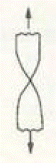
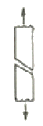
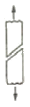
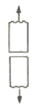
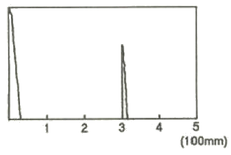
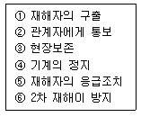
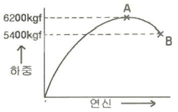
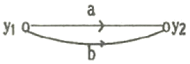
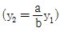
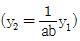

금속재료기능장 (2008-03-30 기출문제)
1과목: 임의 구분
1. 초음파탐상시험의 접촉매질에 관한 설명으로 틀린 것은?
- 물유리와 글리세린은 음향 임피던스가 작으므로 전달특성이 좋다.
- 페이스트(Paste)는 경사면에서의 접촉매질로 적합하다.
- 물은 접촉매질로 사용할 수 있다.
- 그리스를 접촉매질로 사용할수 있다.
(정답률: 60%)

2. Cu-Be계 합금의 용체화처리 및 시효처리의 분위기로 가장 적당한 것은?
- 불활성 분위기
- 산화성 분위기
- 환원성 분위기
- 산화-환원 분위기(산화와 환원의 반복)
(정답률: 83%)
3. 펄라이트의 생성에 따른 석출 기구를 설명한 것 중 틀린 것은?
- 생성된 시멘타이트와 α-Fe은 입계로부터 오스테나이트 방향으로 성장하며 확산한다.
- Fe3C 의 주위에 α-Fe 이 생성된다.
- γ-Fe 입계에 Fe3C 의 핵이 생성된다.
- α-Fe 이 생긴 입계에 새로운 δ-Fe 이 생성된다.
(정답률: 70%)
4. 다음 강 중에서 탈산도가 가장 좋은 것은?
- 림드강
- 킬드강
- 세미킬드강
- 캡트강
(정답률: 79%)
5. 다음 중 매크로 시험에서 육안관찰 할 수 없는 것은?
- 균열, 기공, 편석 등의 결함
- 페라이트, 펄라이트 등의 금속 내부 조직
- 재료의 압연, 단조 등의 가공상태
- 수지상 결정의 분포상태
(정답률: 85%)
6. 다음 재료의 파단면 중 고연성재료에서 볼 수 있는 파단의 형태는?




(정답률: 87%)
7. 두께가 50mm인 강용접부를 초음파탐상시 [그림]과 같이 CRT 화면에 결함 지시파가 나타났다. 이 때 나타난 결함은 탐상면으로부터 얼마 깊이에 존재하는 결함인가? (단, 탐촉자의 굴절각은 60°이고 CRT 화면에서 시간축은 100mm 로 보정되어 있다.

- 10mm
- 20mm
- 30mm
- 40mm
(정답률: 84%)
8. 금속이 응고될 때 불순물이 최종적으로 모이는 곳은?
- 결정립계
- 결정의 모서리
- 금속의 표면
- 결정립의 중심부
(정답률: 86%)
9. 인장시험에 관한 다음 설명 중 틀린 것은?
- 상부항복점(Upper Yield Point)은 항복 개시 후의 최대 응력이다.
- 비례한도는 Hook 의 법칙이 성립하는 응력 값을 갖는다.
- 인장강도(Tensile Strength)는 최대인장 하중을 처음 단면적으로 나눈 값이다.
- 단면수축율을 파단부 최소 단면적과 처음 단면적과의 차를 처음 단면적으로 나눈 값에 대한 백분율이다.
(정답률: 87%)
10. 다음 중 주철의 성장 방지대책이 아닌 것은?
- 흑연을 미세화시킨다.
- C, Si 양을 적게 한다
- 구상흑연을 편상화시킨다.
- 탄화물 안정 원소인 Cr, Mn 등을 첨가시킨다.
(정답률: 67%)
11. 비정질금속(Amorphous Metal)을 제조하는 방법 중 금속가스를 이용한 방법이 아닌 것은?
- 진공증착법
- 이온도금법
- 스퍼터링법
- 전해·무전해법
(정답률: 79%)
12. 오스테나이트 상태로부터 Ms 이상인 어느 온도의 염욕으로 담금질하여 과냉 오스테나이트가 변태완료하기 까지 항온 유지하고 공기 중에서 냉각하는 열처리는?
- 오스템퍼링(austempering)
- 마퀜칭(marquenching)
- 마템퍼링(martempering)
- 오스퍼밍(ausforming)
(정답률: 73%)
13. 서로 다른 2종의 금속을 조합시켜 열기전력의 발생을 이용한 열전쌍온도계 중 크로멜-말로멜의 최고 사용 온도는 약 몇 도(℃)인가?
- 350
- 500
- 800
- 1200
(정답률: 79%)
14. 다음 중 무기성 분진에 의한 진폐증으로 옳은 것은?
- 석면폐증
- 연초폐증
- 설탕폐증
- 농부폐증
(정답률: 87%)
15. 탄소강에 존재하는 원소가 기계적 성질에 미치는 영향을 설명한 것 중 틀린 것은?
- Mn: 강 중에서 0.2∼0.4% 정도로 억제하여 공구강의 담금질파열을 방지한다.
- Si: Ferrite 중에 고용해서 경도, 탄성한계, 인장응력을 높이며 연신율, 충격치를 감소시킨다.
- P: Fe3P 화합물을 만들어 입자를 조대화시키고 상온에서 충격치를 감소시켜 상온취성의 원인이 된다.
- S: 극소량이 강중에 고용하여 인장강도, 탄성한계를 높이고 내식성을 증가시키며, 0.35% 정도이면 고탄소강에서도 유효하다.
(정답률: 67%)
16. 자분탐상시험의 특징을 설명한 것 중 틀린 것은?
- 철강재료 등 강자성체의 표면층 검출에 효과적이다.
- 자화방향과 직각인 방향의 결함검출에 효과적이다.
- 오스테나이트계 스테인리스강 등의 비자성 재료에 효과적이다.
- 표면상의 결함위치, 길이는 알 수 있으나 내부결함의 검출에는 용이하지 않다.
(정답률: 87%)
17. 로젠하우젠, 뵐러식 등의 장치로 반복 응력에 의해 재료가 파괴에 이르는 것을 시험하는 것은?
- 피로시험
- 주형제작시험
- 경도시험
- 주물용해시험
(정답률: 90%)
18. 자동제어 시스템에서 연속제어에 속하지 않는 것은?
- 비례제어
- 다점제어
- 적분제어
- 미분제어
(정답률: 66%)
19. 자분탐상검사에서 시험체에 직접 전극을 접촉시켜 통전함으로서 자계를 만드는 방식이 아닌 것은?
- 축통전법
- 프로드법
- 코일법
- 직각통전법
(정답률: 67%)
20. 다음 중 Al 또는 Al 합금을 부식시키기 위한 부식액으로 옳은 것은?
- 피크르산 알콜 용액
- 수산화나트륨 용액
- 질산아세트산 용액
- 염화제2철 용액
(정답률: 81%)
2과목: 임의 구분
21. 다음 중 흑연의 형상 중 A형의 특징이 아닌 것은?
- 자유로 발달한 조대한 초정흑연(kish graphite)이 혼합된 조직이다.
- 탄소가 3% 이하의 아공정 주철에 잘 나타난다.
- 기계적 성질이 다른 형에 비해 가장 우수하다.
- 균일분포의 편상 흑연조직이다.
(정답률: 46%)
22. 크리프 시험에서 크리프곡선의 3단계 구분 중 제2단계의 진행상황으로 옳은 것은?
- 크리프 속도가 대략 일정하게 진행되는 정상 크리프 단계
- 크리프 속도가 점차 증가되어 파단에 이르는 가속 크리프 단계
- 초기 크리프에서 변형율이 점차 감소되는 단계
- 크리프 속도가 불규칙하게 진행되는 단계
(정답률: 82%)
23. 용접구조용강은 용접에 의하여 구조물을 제작하므로 강도와 용접성이 필수이다. 이러한 용접구조용강에 대한 설명으로 옳은 것은?
- 용접구조용강은 Mg과 W에 의해 강도를 확보한다.
- 용접구조용강은 비조질과 조질강으로 구분한다.
- 용접성은 보증하는 성분규정인 탄소당량의 값이 클수록 용접이 용이하므로 가능한 큰 값으로 한다.
- 용접 열영향부는 저온균열 감수성에 민감하여 급열급냉하면 경화 후 취화균열이 발생할 수 있으므로 판두께가 크고 용접입열이 작으면 주의해야 한다.
(정답률: 66%)
24. 방사선투과검사에서 시험체 표면에 밀착하여 필름과 함께 촬영한 후에 촬영된 필름의 상질을 평가하는 부속기기는?
- 표준시험편
- 투과도계
- 대비시험편
- 필름관찰기
(정답률: 72%)
25. 침입형고용체(Interstitial Solid Solution)를 형성하는 원소가 아닌 것은?
- C
- N
- B
- W
(정답률: 52%)
26. 18-8 스테인리스강 (Cv=5890m/s, Cs=3100m/s)의 경사각탐상을 위해 굴절각 70°의 종파경사각 탐촉자를 설계했다. 이 때 나타나는 횡파의 굴절각은 약 몇 도 인가?
- 10°
- 25°
- 30°
- 45°
(정답률: 69%)
27. 형상기억합금 중 오스테나이트의 형상과 더불어 마텐자이트상이 변형되었을 때의 형상도 기억하는 형상기억 효과의 종류는?
- 일방향 형상기억
- 가역 형상기억
- 전방위 형상기억
- 변태탄성 형상기억
(정답률: 66%)
28. 다음 중 방사선 방호의 3원칙과 관계가 먼 것은?
- 방사선 선원과 사람과의 사이에 차폐물을 둔다.
- 방사선 선원과 사람사이의 거리를 멀리 한다.
- 방사선 방호용 측정기를 사용한다.
- 방사선을 받는 시간을 줄인다.
(정답률: 68%)
29. 다음 중 가장 높은 경도를 나타내는 조직은?
- Ferrite
- Pearlite
- Cementite
- Austenite
(정답률: 75%)
30. 침투탐상시험에서 과세척을 방지하여 미세하게 갈라지고 폭이 넓거나 얕은 결함의 검출에 가장 적합한 시험은?
- 화학적 결함침투탐상시험
- 매용성 수세침투탐상시험
- 후유화성 형광침투탐상시험
- 물리적 세척침투탐상시험
(정답률: 80%)
31. 다음 중 베어링강의 경우 소오킹(soaking) 처리를 하는 주 목적은?
- 내부응력의 제거를 위하여
- 망상 시멘타이트의 구상화를 위하여
- 조직의 미세화오 표준화를 위하여
- 강재의 거대 탄화물을 소멸시키거나 띠모양의 편석을 경감시키기 위하여
(정답률: 45%)
32. 철강재료를 고온가열하면 표면부는 로 내의 분위기와 반응하여 산화 및 탈탄을 일으킬 수 있다. 이 때 산화와 탈탄에 대한 설명으로 틀린 것은?
- 분위기에 수분이 함유되면 탈탄의 위험성이 높다.
- 탈탄된 부품은 열처리 후 담금질 경도가 불충분하다.
- 중성분위기나 진공분위기는 산화와 탈탄 방지에 유효하다.
- 탈탄은 재료의 피로강도 등 기계적 성질에 영향을 미치지 않는다.
(정답률: 83%)
33. 스테인리스강의 10% 옥살산 부식시험에 대한 설명으로 틀린 것은?
- 시험편의 예민화처리는 극저 탄소 강종 및 안정화 강종에는 실시하지 않는다.
- 시험편을 부식하여 현미경 검사를 하는 면은 압연 또는 단조품일 때에는 가공 방향에 직각의 단면으로 한다.
- 몰리브덴을 함유한 경우 단상조직이 나타나기 어려우므로 10% 옥살산 대신에 10% 과황산암모늄을 사용할 수 있다.
- 시험판의 부식면을 음극으로 하여 옥살산 부식용액중에 부식면적 1cm2당 전류를 1A로 조정하여 90초간 부식한다.
(정답률: 42%)
34. [보기]에서 재해 발생시 긴급조치 순서로 가장 적절한 것은?

- ①→②→③→④→⑤→⑥
- ③→①→②→④→⑤→⑥
- ④→①→⑤→②→⑥→③
- ⑥→⑤→④→③→②→①
(정답률: 88%)
35. CAD 작업시 원을 그릴 때의 방법으로 틀린 것은?
- 중심점과 반지름 값에 의한 방법
- 3점 지점에 의한 방법
- 2개의 접선과 반지름 값에 의한 방법
- 시작점과 중심점에 의한 방법
(정답률: 86%)
36. 열전대에 사용되는 재료가 갖는 특성으로 틀린 것은?
- 제작이 쉽고 호환성이 있어야 한다.
- 히스테리시스 차가 커야 한다.
- 열기전력이 크고 안정성이 있어야 한다.
- 내열, 내식성이 뛰어나고 고온에서도 기계적 강도가 커야 한다.
(정답률: 90%)
37. 침투탐상검사에서 침투시간에 대한 설명 중 틀린 것은?
- 침투시간은 침투액을 적용한 후 잉여 침투액을 세척처리하거나 유화처리한 후 까지를 말한다.
- 피로균열, 연마균열 등 폭이 좁은 결함은 기준 침투시간보다 길게 한다.
- 침투제 종류, 시험체 재질, 예상결함의 종류와 크기 등을 고려하여 선정한다.
- 정확한 침투시간을 결정하기 위해 대비 시험편을 이용하기도 한다.
(정답률: 57%)
38. 운반이 편리하고 시료면에 압흔이 거의 남지 않으며 시료대에 올려지지 않는 대형의 시료에 적용할 수 있는 경도 시험법은?
- 브리넬 경도시험
- 로크웰 경도시험
- 비커스 경도시험
- 쇼오 경도시험
(정답률: 83%)
39. 강에 특수원소를 첨가할 때의 영향을 설명한 것으로 틀린 것은?
- Al을 첨가하여 결정립 성장을 억제시킨다.
- Cr을 첨가하여 내산화성 및 내식성을 증가시킨다.
- B를 미량 첨가하여 담금질성을 저하시킨다.
- Mo을 첨가하여 뜨임취성을 방지한다.
(정답률: 84%)
40. Ni+Cu계 합금에 대한 설명으로 옳은 것은?
- 60∼70Ni 합금을 모넬메탈이라 한다.
- 전기저항은 약 55%Ni에서 최소가 된다.
- 60∼70Ni에서 강도, 경도가 최소가 된다.
- 부분고용체형인 편정형 평형상태도를 갖는다.
(정답률: 57%)
3과목: 임의 구분
41. 쾌삭강(free-cutting steel)에 첨가하여 피삭성을 좋게 하는 특수 원소는?
- W
- Cu
- S
- Fe
(정답률: 73%)
42. Sub-Zero 처리를 실시하므로 얻어지는 장점이 아닌 것은?
- 시효변형을 방지한다.
- 담금질 경도를 감소시킨다.
- 내마모성, 내피로성이 향상된다
- 담금질한 강의 조직을 안정화시킨다.
(정답률: 82%)
43. 다음 중 에릭센 시험(Erichsen Test)의 목적으로 옳은 것은?
- 연성(ductillty)
- 인성(toughness)
- 취성(shortness)
- 강성(stiffness)
(정답률: 86%)
44. 강과 비슷한 강인성을 가지는 구상흑연주철을 제조할 때 사용되는 구상화제로서 가장 적합한 것은?
- Ba
- Al
- Mg
- Zn
(정답률: 79%)
45. 담금질에서 나타나는 조직의 경도와 강도가 높은 순서에서 낮은 순서로 옳은 것은?
- 오스테나이트＞트루스타이트＞마텐자이트
- 트루스타이트＞마텐자이트＞오스테나이트
- 마텐자이트＞트루스타이트＞오스테나이트
- 마텐자이트＞오스테나이트＞트루스타이트
(정답률: 83%)
46. 단면적 40mm2인 환봉을 인장시험한 그래프이다. A점에서의 단면적은 34mm2, B점에서의 단면적은 28mm2 이었을 때 인장강도(kgf/mm2)는?

- 135
- 155
- 182
- 221
(정답률: 70%)
47. 피로시험에서 구할 수 있는 재료의 특성이 아닌 것은?
- 비례한도
- S-N곡선
- 피로한도
- 피로강도
(정답률: 72%)
48. 원자의 배열은 변하지 않고 강자서에서 상자성으로 자성이 변하는 경우 즉, 상(相)의 변화가 아니고 에너지적 변화인 것을 무엇이라 하는가?
- 자기변태
- 동소변태
- 포정반응
- 편정반응
(정답률: 84%)
49. 다음 중 고속도강을 담금질하고 뜨임을 반복하는 이유로 가장 옳은 것은?
- 담금질 온도가 높으므로
- 결정립을 조대화 하기 위하여
- 2차 경화를 없애기 위하여
- 잔류 오스테나이트를 없애기 위하여
(정답률: 48%)
50. 다음 중 안전점검의 가장 주된 목적은?
- 위험을 사전에 발견하여 개선하는데 있다.
- 법 및 기준에 적합 여부를 점검하는데 있다.
- 안전사고의 통계율을 점검하는데 있다.
- 장비의 설계를 하기 위함이다.
(정답률: 86%)
51. SM25C의 강이 공석점 직하에서 펄라이트의 조직양은 약 얼마인가? (단, 공석점의 탄소함유량은 0.85% 이다.)
- 17%
- 29%
- 37%
- 49%
(정답률: 62%)
52. 강의 내열성 및 내스케일(scale)성을 향상시키기 위하여 강의 표면에 Al을 침투시키는 표면경화법은?
- 크로마이징(chromizing)
- 실리코나이징(siliconizing)
- 칼로라이징(calorizing)
- 세라다이징(sheradizing)
(정답률: 83%)
53. [그림]과 같은 신호-흐름선도의 선형 방정식은?

- y2=(a+b)y1
- y2=a·b·y1


(정답률: 81%)
54. 와전류탐상시험에서 코일의 임피던스에 영향을 미치는 인자와 가장 거리가 먼 것은?
- 시험체의 투자율
- 시험체의 전도율
- 시험주파수
- 잔류응력
(정답률: 78%)
55. 모든 작업을 기본동작으로 분해하고, 각 기본 동작에 대하여 성질과 조건에 따라 미리 정해 놓은 시간차를 적용하여 정미시간을 산정하는 방법은?
- PTS법
- WS법
- 스톱워치법
- 실적자료법
(정답률: 88%)
56. 일반적으로 품질코스트 가운데 가장 큰 비율을 차지하는 코스트는?
- 평가코스트
- 실패코스트
- 예방코스트
- 검사코스트
(정답률: 80%)
57. 로트로부터 시료를 샘플링해서 조사하고, 그 결과를 로트의 판정기준과 대조하여 그 로트의 합격, 불합격을 판정하는 검사를 무엇이라 하는가?
- 샘플링 검사
- 전수검사
- 공정검사
- 품질검사
(정답률: 84%)
58. 일정 통제를 할 때 1일당 그 작업을 단축하는데 소요되는 비용의 증가를 의미하는 것은?
- 비용구배(Cost slope)
- 정상소요시간(Normal duration time)
- 비용견적(Cost estimation)
- 총비용(Total cost)
(정답률: 83%)
59. c관리도에서 k=20인 군의 총부적합(결정)수 합계는 58이었다. 이 관리도의 UCL, LCL을 구하면 약 얼마인가?
- UCL=6.92, LCL=0
- UCL=4.90, LCL=고려하지 않음
- UCL=6.92, LCL=고려하지 않음
- UCL=8.01, LCL=고려하지 않음
(정답률: 62%)
60. 다음 중 데이터를 그 내용이나 원인 등 분류 항목별로 나누어 크기의 순서대로 나열하여 나타낸 그림을 무엇이라 하는가?
- 히스토그램(histogram)
- 파레토도(pareto diagram)
- 특성요인도(causes and effects diagram)
- 체크시트(check sheet)
(정답률: 57%)